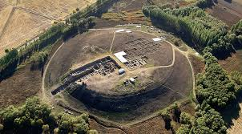

Kaman, köklü geçmişiyle İç Anadolu’nun önemli yerleşim bölgelerinden biridir. İlçenin tarihi, binlerce yıl öncesine kadar uzanmaktadır. Bölgede yapılan arkeolojik çalışmalar, Kaman ve çevresinin Hititler döneminden itibaren yerleşim alanı olarak kullanıldığını göstermektedir. Özellikle Kalehöyük kazıları, ilçenin tarihine ışık tutan en önemli çalışmalardan biridir. Bu kazılarda Hitit, Frig, Roma ve Bizans dönemlerine ait çok sayıda eser ortaya çıkarılmıştır. Tarih boyunca farklı medeniyetlere ev sahipliği yapan Kaman; Selçuklu ve Osmanlı dönemlerinde de önemli bir yerleşim merkezi olmuştur. Anadolu’nun ticaret ve geçiş yolları üzerinde bulunması, ilçenin gelişmesinde büyük rol oynamıştır. Osmanlı döneminde tarım ve hayvancılıkla ön plana çıkan Kaman, kültürel yapısını günümüze kadar korumayı başarmıştır. Cumhuriyet döneminde gelişimini sürdüren ilçe, bugün tarihi mirası, doğal güzellikleri ve kültürel değerleriyle dikkat çekmektedir. Özellikle Japon Bahçesi, Kalehöyük Arkeoloji Müzesi ve tarihi yapılarıyla yerli ve yabancı ziyaretçilerin ilgisini çeken Kaman, geçmiş ile günümüzü bir arada yaşatan önemli ilçelerden biri olma özelliğini sürdürmektedir.

Kaman'ın Tarihi Dokusu